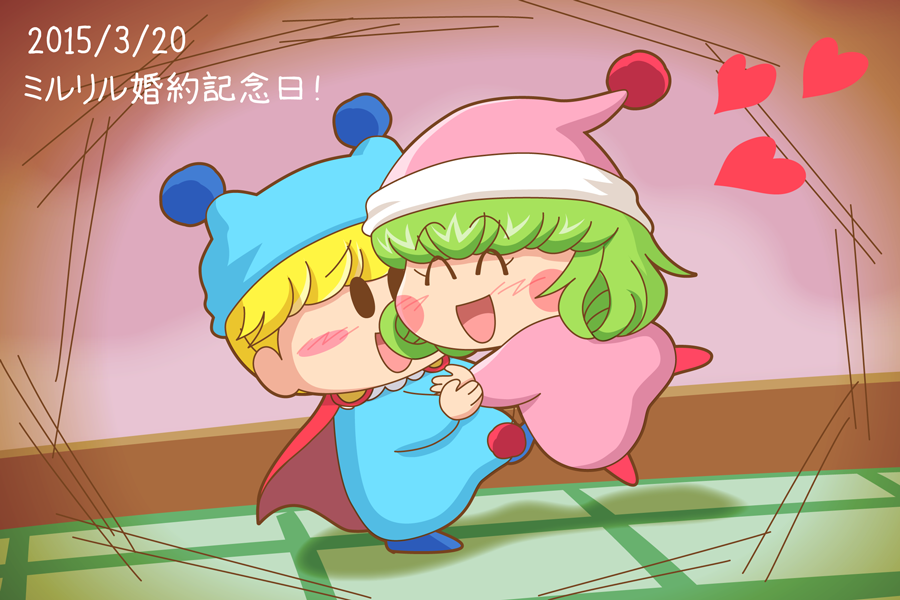

リルム「ミルモさま～～っ！ これからもずっとずっと一緒ですわ～」
ミルモ「よせやい、照れるじゃねーか」
リルム「いいえ照れる必要なんてありませんわ。だってわたくしたち、婚約者ですもの」
ミルモ「そういうものなのかぁ？」
原作２巻で触れられているように、３月２０日はミルモとリルムの婚約記念日でしたね。私もその記念としてお絵描きさせていただきました。
原作によると、二人は出会った当日に、二人の知らないところで婚約が決まったんですよね。特に、ミルモは初恋も知らずに結婚相手が決まってしまうことに。ミルモは恋愛経験が誰よりも少ないはずなのに（ムルモよりも少ない？）、恋の妖精という肩書きがあるのがまた不思議・・・。
今年の３月２０日はどんな騒動があったのか、皆さんのご想像にお任せします。きっとリルムは腕によりをかけて、ミルモの望んでいない料理をたくさん作ったのでしょうね(笑)。
(2015/3/22)